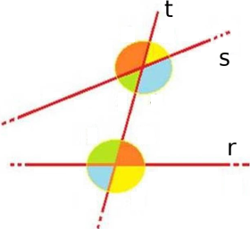
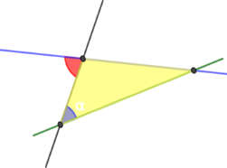

Criteri di parallelismo
Una retta che intersechi altre due rette date dice trasverale. Esiste una terminologia classica, di grande aiuto, per individuare gli angoli formati da due rette con una loro trasverale: in riferimento alla figura si ha.
Gli angoli alterni sono da parti opposte rispetto alla trasversale t ma entrambi interni o esterni e non adiacenti.
Gli angoli corrispondenti sono dalla stessa parte della trasversale t, uno interno e l'altro esterno e non adiacenti.
Gli angoli coniugati sono entrambi interni (o esterni) dalla stessa parte della trasversale t.
| Alterni | interni | (4;6), (3;5) |
|---|---|---|
| esterni | (1;7), (2;8) | |
| Corrispondenti | (1;5), (2,6), (4;8), (3;7) | |
| Coniugati | interni | (4,5), (3,5) |
| esterni | (1,8), (2;7) |
Come possiamo capire se due rette sono parallele? La risposta è data dai prossimi teoremi.
Teorema. Se due rette tagliate da una trasversale formano una coppia di angoli alterni interni congruenti, allora sono parallele.
Proof. Facendo riferimento alla figura sopra, supponiamo gli angoli 3 e 4, congruenti. Ragionando per assurdo supponiamo la tesi falsa, cioè che le rette s e r non siano parallele, ma si incontrino in un punto C.
Osserviamo il triangolo ABC e applichiamo a esso il teorema dell'angolo esterno a un triangolo, concludiamo che β è maggiore di α. Siamo giunti a contraddire l'ipotesi che diceva α ≌ β; duqnue r e s non possono, intersecarsi, quindi sono parallele. □
Più in generale, vale il seguente criterio per il parallelismo.
Teorema. Se due rette incontrandone una terza, formano:
angoli alterni (interni o esterni) congruenti
angoli corrispondenti congruenti;
angoli coniugati (interni o esterni) supplementari
allora le due rette sono parallele.
Il teorema sulle parallele è necessario per la dimostrazione del seguente teorema sull'angolo esterno di un triangolo.